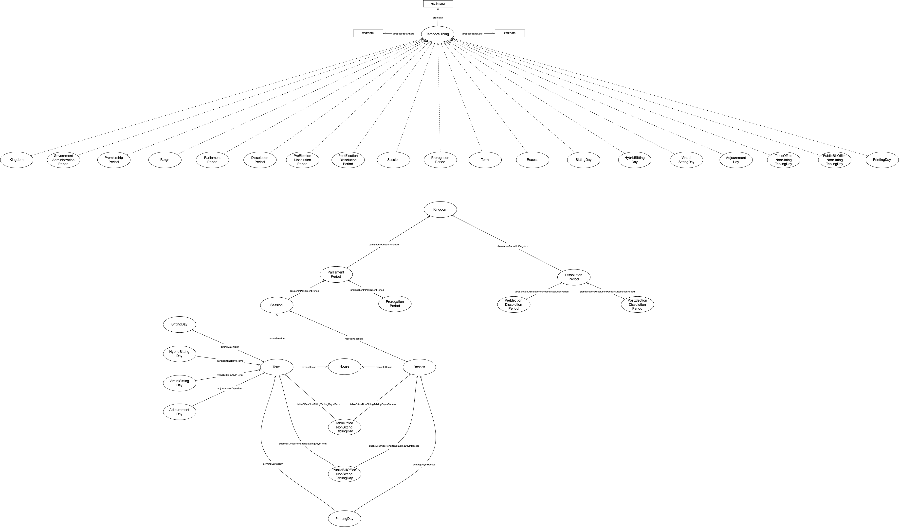

IRI: http://parliament.uk/ontologies/time-period/Agent
IRI: http://parliament.uk/ontologies/time-period/DissolutionPeriod
IRI: http://parliament.uk/ontologies/time-period/Event
IRI: http://parliament.uk/ontologies/time-period/GovernmentAdministrationPeriod
IRI: http://parliament.uk/ontologies/time-period/House
IRI: http://parliament.uk/ontologies/time-period/ParliamentPeriod
IRI: http://parliament.uk/ontologies/time-period/PostElectionDissolutionPeriod
IRI: http://parliament.uk/ontologies/time-period/PreElectionDissolutionPeriod
IRI: http://parliament.uk/ontologies/time-period/PremiershipPeriod
IRI: http://parliament.uk/ontologies/time-period/PrintingDay
IRI: http://parliament.uk/ontologies/time-period/ProrogationPeriod
IRI: http://parliament.uk/ontologies/time-period/Recess
IRI: http://parliament.uk/ontologies/time-period/Reign
IRI: http://parliament.uk/ontologies/time-period/Session
IRI: http://parliament.uk/ontologies/time-period/SittingDay
IRI: http://parliament.uk/ontologies/time-period/StatutoryDay
IRI: http://parliament.uk/ontologies/time-period/TablingDay
IRI: http://parliament.uk/ontologies/time-period/Term
IRI: http://parliament.uk/ontologies/time-period/TimePeriod
IRI: http://parliament.uk/ontologies/time-period/containedIn
IRI: http://parliament.uk/ontologies/time-period/hasPostElectionDissolutionPeriod
IRI: http://parliament.uk/ontologies/time-period/hasPreElectionDissolutionPeriod
IRI: http://parliament.uk/ontologies/time-period/hasPrintingDay
IRI: http://parliament.uk/ontologies/time-period/hasProrogationPeriod
IRI: http://parliament.uk/ontologies/time-period/hasRecess
IRI: http://parliament.uk/ontologies/time-period/hasRecessPrintingDay
IRI: http://parliament.uk/ontologies/time-period/hasRecessStatutoryDay
IRI: http://parliament.uk/ontologies/time-period/hasRecessTablingDay
IRI: http://parliament.uk/ontologies/time-period/hasSession
IRI: http://parliament.uk/ontologies/time-period/hasSittingDay
IRI: http://parliament.uk/ontologies/time-period/hasStatutoryDay
IRI: http://parliament.uk/ontologies/time-period/hasTablingDay
IRI: http://parliament.uk/ontologies/time-period/hasTerm
IRI: http://parliament.uk/ontologies/time-period/houseHasRecess
IRI: http://parliament.uk/ontologies/time-period/houseHasTerm
IRI: http://parliament.uk/ontologies/time-period/initiatesEvent
IRI: http://parliament.uk/ontologies/time-period/initiatesTimePeriod
IRI: http://parliament.uk/ontologies/time-period/partOfPremiershipPeriod
IRI: http://parliament.uk/ontologies/time-period/parliamentNumber
IRI: http://parliament.uk/ontologies/time-period/proposedEndDate
IRI: http://parliament.uk/ontologies/time-period/proposedStartDate
This HTML document was obtained by processing the OWL ontology source code through LODE, Live OWL Documentation Environment, developed by Silvio Peroni.